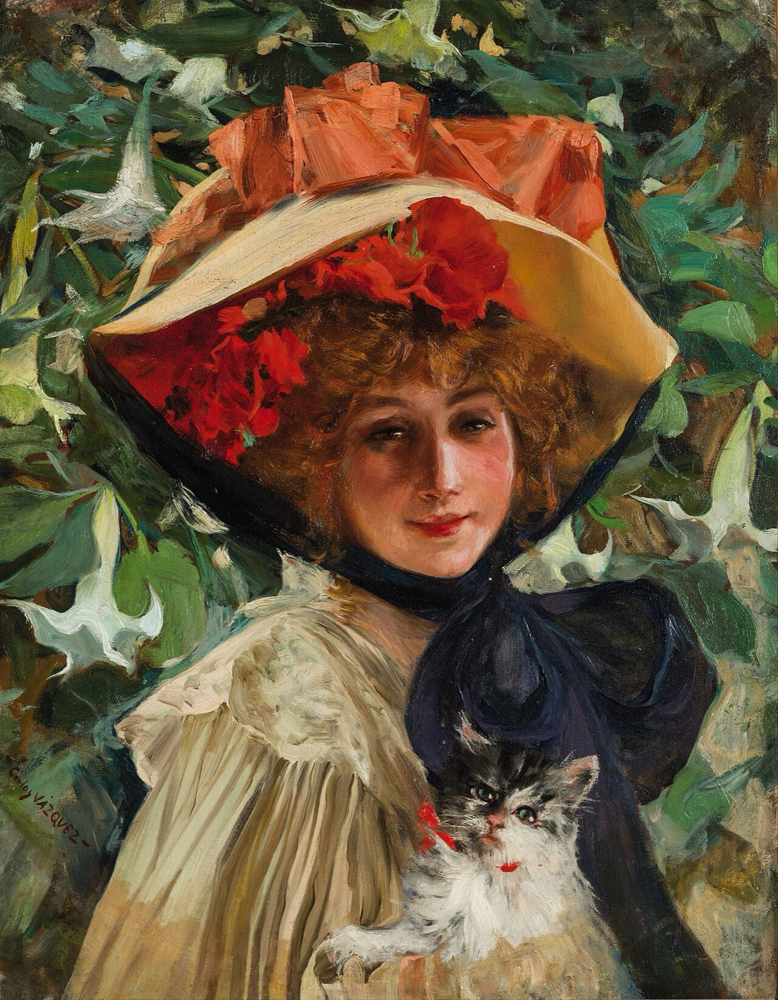
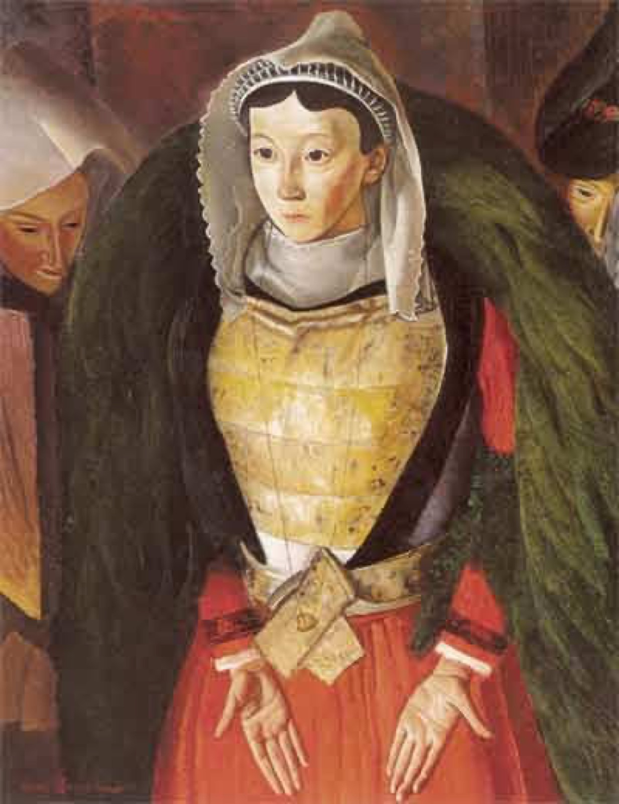
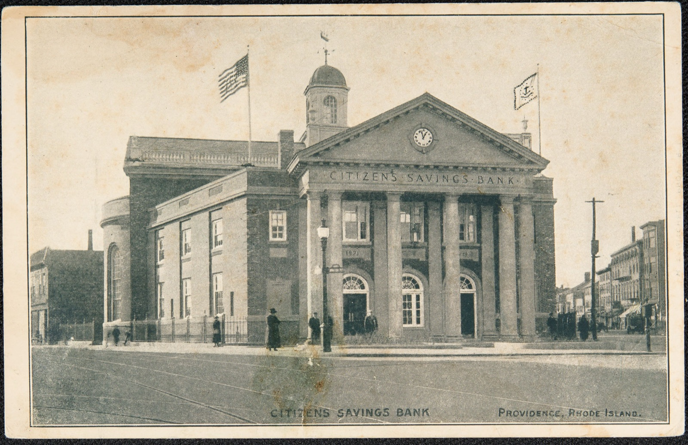
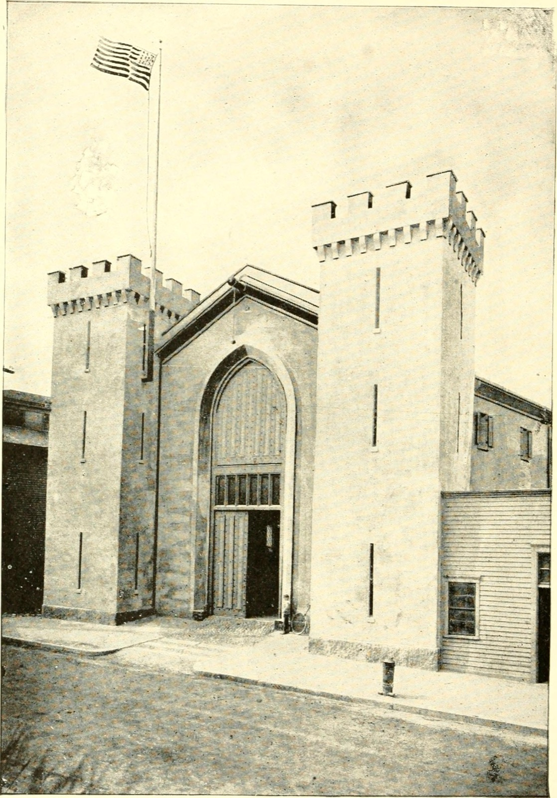
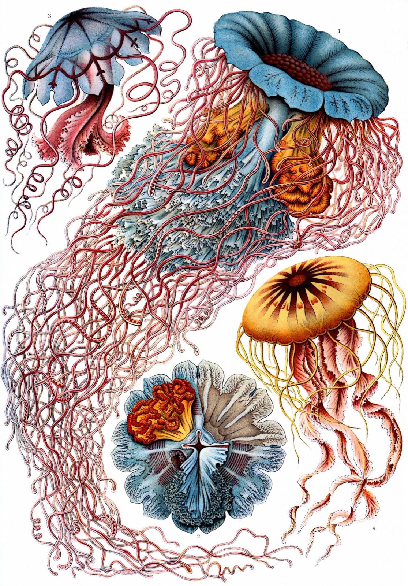

Guardian
Roland Banks
- 3Will
- 3Int
- 4Com
- 2Agi
Health 9
Sanity 5
Fight the good fight. After you defeat an enemy, discover 1 clue at your location.
A co-operative card game · 1 to 4 investigators
A guided, click-along tutorial that takes you from opening the box to playing your first full round. No rulebook required.
Read this first
It is a co-operative card game for one to four players. Together you play a team of investigators in 1920s New England, working through a story scenario that is trying to destroy you. You win together, and you usually lose together.
Every scenario asks the same two things. Gather clues at locations to advance the Act deck, which moves the story forward. All the while, doom piles up on the Agenda deck, a countdown that ends the game badly if it fills before you finish. Your job is to advance the Act before the Agenda runs out.
Part I
Getting the table ready, one step at a time. Eight short steps and you are playing.
Step 1 of 18
Each player picks one investigator. They are your character for the whole campaign: your stats, your deck, your health and sanity. The Core Set gives you five. For a first game, here are four that pair well together.
Every investigator has four stats. Higher is better. A 4 in Combat means you are good at fighting. A 1 means you should let someone else do it.
Guardian
Fight the good fight. After you defeat an enemy, discover 1 clue at your location.

Seeker
Tome knowledge. Take an extra action each turn, used only to play or activate a Tome asset.

Mystic
Rage of the ancients. After horror is placed on Agnes, deal 1 damage to an enemy at your location.
Survivor
Escapist. Once per test, after drawing a chaos token, discard a card to draw a new one instead.
Step 2 of 18
The Core Set comes with a ready-made deck for every investigator, so you do not have to build anything for your first game. Find the deck listed for your investigator and take all 30 cards.
Tap a card to flip it.
Step 3 of 18
Your investigator comes with two dials. Set them now and keep them in front of you for the whole game.
Health
How much physical punishment you can take. Damage from monsters comes out of health.
Sanity
How much your mind can bear. Horror from the mythos comes out of sanity.
| Investigator | Health | Sanity |
|---|---|---|
| Roland Banks | 9 | 5 |
| Daisy Walker | 5 | 9 |
| Agnes Baker | 6 | 8 |
| Wendy Adams | 7 | 7 |
Step 4 of 18
A scenario is one chapter of the story. We will teach with the first scenario of the Core Set: “The Gathering.” Its setup card tells you exactly which cards to find and place.
Step 5 of 18
Two decks drive the story. Keep them apart.
Act deck
The objectives, your side of the story. Spend clues to advance it. Advancing the final Act usually wins the scenario.
Agenda deck
The villains' plan, and a countdown. Doom fills it up. If it advances past the last card, you probably lose.
Place the first card of each deck face up (the active Act and active Agenda). The rest stay face down in their piles.
Step 6 of 18
This is the soul of the game. Whenever you attempt something risky, you pull a token from the bag at random and add its number to your test. Most tokens help a little. Some hurt. One is a disaster.
For the Core Set on Standard difficulty, the bag holds exactly 16 tokens:
Pull tokens and watch how the odds feel. This is exactly what you will do on every skill test.
16 tokens in the bag.
Tokens drawn this session
Step 7 of 18
Shuffle your deck. Draw the top 5 cards. This is your starting hand.
Each investigator also starts every scenario with 5 resources. Set them out (any coins or tokens will do). Resources pay for the cards you play later.
5 cards
Your opening hand. A hand of assets, events, and skills you can use from turn one.
5 resources
Your starting money. Cards cost resources to play, so running dry slows you down.
Step 8 of 18
Before the first round, you get one chance to swap out a bad hand. This is called the mulligan.
If the new hand is worse, that is tough luck. You only get one mulligan.
Now read the scenario's introduction aloud, and choose a lead investigator. That player makes a few group decisions, like whose turn resolves first.
Part II
Every game is the same four phases, repeated. Learn the rhythm and you can play any scenario.
Step 9 of 18
A game is a series of rounds. Each round runs through four phases in the same order, every time. Click each one.
The game pushes back.
The story throws trouble at you. Doom advances the Agenda, and encounter cards bring monsters, treacheries, and curses. This phase happens to everyone.
This is your turn.
Each investigator takes three actions, one at a time, in any order you like. Move, investigate, fight, play cards. This is where you win or fall behind.
Monsters strike.
Every enemy in play moves and then attacks anyone it is engaged with. You do nothing here but take the hits and lose sanity.
Catch your breath.
Ready your exhausted cards, draw a card, gain a resource, and discard down to a hand of eight. Then the next round begins with Mythos again.
Step 10 of 18
Two things happen, in order.
Place 1 doom token on the active Agenda card. Always 1, unless a card says otherwise. If that fills the Agenda's doom threshold, the Agenda advances (that is bad, see Step 16).
The lead investigator draws 1 card from the encounter deck and resolves it, then the next player does the same, and so on. Encounter cards are enemies and treacheries. Everyone gets one, every round.
Enemy cards
A monster appears at your location, usually already engaged with you. You will need to fight or run next phase.
Treachery cards
A trap or a curse. You usually test a skill to resist it, or it hurts you right away.
Step 11 of 18
This is the heart of your turn. Each investigator gets three actions, spent one at a time. You can spend them in any order and on any mix of the actions below.
Test Int against the location's shroud. Success finds 1 clue.
Move to a connected location. Clues and danger live out there, so move often.
Test Com against an engaged enemy. Success deals 1 damage unless your weapon says more.
Test Agi against the enemy's evade value. Success exhausts it and breaks it off you.
Pull an enemy at your location onto yourself, so it attacks you instead of a teammate.
Pay an asset or event's resource cost and put it into play from your hand.
Draw 1 card. Useful when your hand is thin, wasteful when it is full.
Gain 1 resource. Do this to afford an expensive asset next turn.
Step 12 of 18 · the core mechanic
Every risky action, and every treachery, is resolved with a skill test. Learn this and you have learned the game. Build one below, then draw the token.
Committed cards add their icons to your value. You discard them whatever happens.
Set it up, then reveal a token.
Investigate uses Intellect. Fight uses Combat. Evade uses Agility. A treachery names the skill it wants.
Discard cards from hand to add matching icons to your value. Optional, but often the difference between pass and fail.
Draw one at random and apply its modifier. The Auto-Fail makes the whole test fail. The Elder Sign usually helps a lot.
If your total is equal to or higher than the difficulty, you succeed. A tie counts as a win.
Step 13 of 18
Clues are how you make progress. You find them by investigating, and you spend them to advance the Act.


Step 14 of 18
Now the monsters get their turn. Every enemy in play, in order, does two things.
If the enemy is not engaged with anyone, it moves toward the nearest investigator along the shortest path. If it is engaged, it stays put and prepares to attack.
Each enemy engaged with an investigator attacks that investigator: the enemy deals its damage and its horror to them. This is where health and sanity drain fast.
It is on you. Fight it down, or slip away.
Step 15 of 18
The round winds down. Every investigator does four things, in order.
Turn all your exhausted cards upright again. They are usable next round.
Draw 1 card from your deck. If your deck runs out, you take 1 horror and shuffle your discard back in as a new deck.
Take 1 resource. A slow but steady income for the big cards.
If you hold more than 8 cards, discard until you have 8. Hand size limit is 8.
Then the round is over, and the next one begins with the Mythos phase.
Part III
How a scenario ends, and the quick reference you will come back to.
Step 16 of 18
Doom is the clock that ends the game badly. It only ever goes up, and it is always one step ahead of your plans.
You add 1 in the Mythos phase, and some encounter cards and enemies add more. Doom on a card counts toward the total on the active Agenda.
Flip to the next Agenda card and follow its text. Often this is a catastrophe: a monster arrives, or the story lurches forward on the villain's terms.
Your counterplay is clues. Finish the Act before the last Agenda runs out.

Step 17 of 18
Step 18 of 18
Everything above, compressed. Keep this step open at the table.
Ties succeed. The Auto-Fail always fails.
Watch a round
Roland Banks is alone in the Study, three actions to spend and an Agenda filling with doom. Step through his first round, click by click.
Mythos Phase
One doom goes onto the Agenda. Then Roland draws an encounter card and a Ghoul claws its way in, engaged with him.
Now you try
The board is set for you. Roland Banks is in the Study, his deck shuffled and the chaos bag full. Spend his three actions, weather the mythos, and try to advance the Act before doom fills the Agenda.
Check yourself
Six questions. Pick an answer to see why it is right or wrong. No score kept, no pressure.
Question 1 of 6
Score 0 / 6
An unofficial, non-commercial fan tutorial. Arkham Horror: The Card Game and all related names and terminology are trademarks of Fantasy Flight Games. No game components or card art are reproduced here.
All imagery is public-domain or openly licensed, sourced from Wikimedia Commons. Illustrations by Arnold Böcklin, Ernst Haeckel, and others; photographs from the Library of Congress and other archives. Full credits with source links are in CREDITS.md.
Built as a static site. Open index.html directly, or serve the folder from any web host.